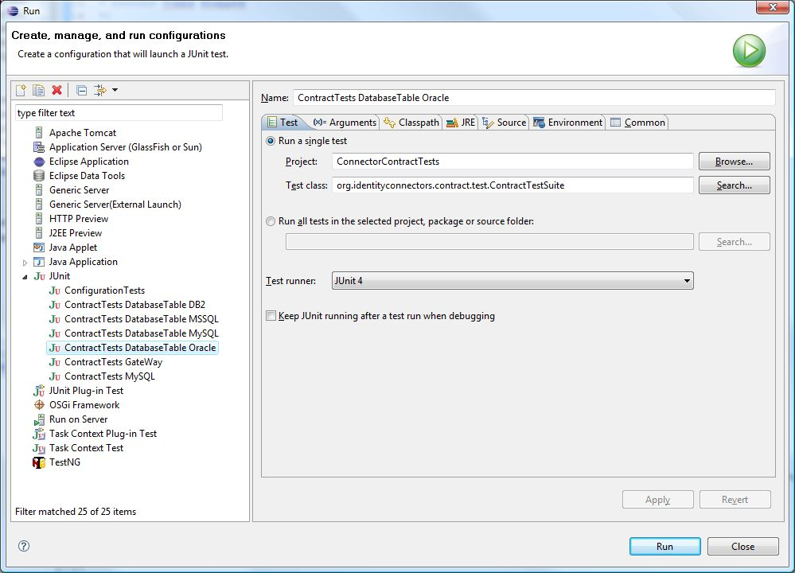
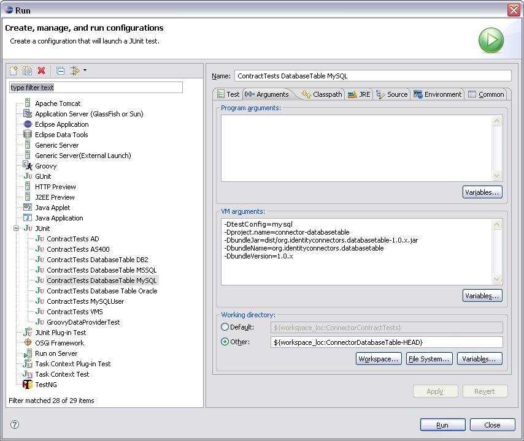
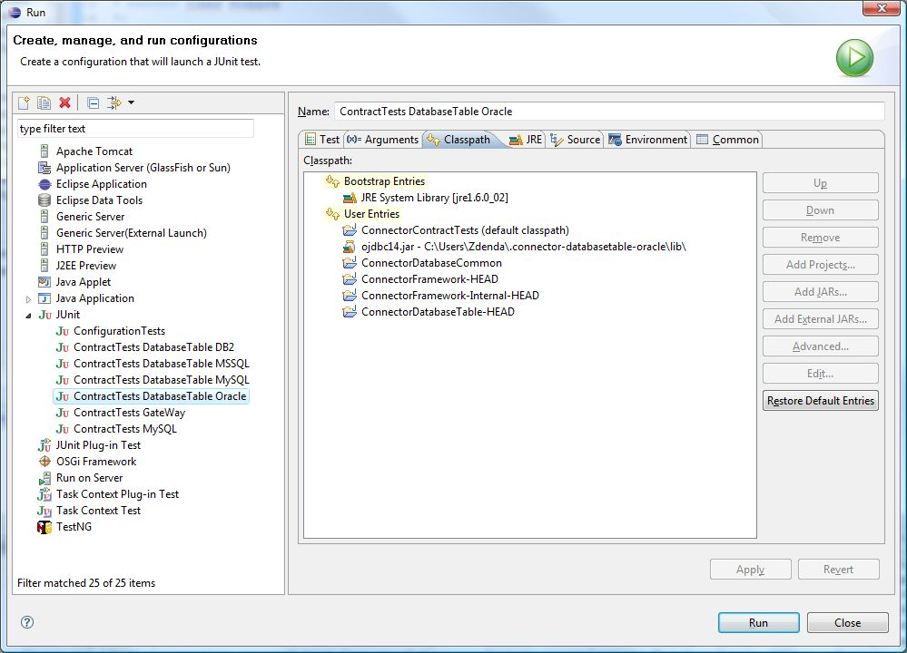

Groovy contract tests manual v0.2 DRAFT
Table of contents
Notation
- properties
file = contract test configuration file = test configuration
mean all
the same in this text.
- see In-depth guide:
-- is marker for hyperlinks to the advanced guide.
1. Quick
start guide
Contract test configuration files are Groovy scripts. So they
have to
respect syntax of the Groovy language. 98% of Java syntax will
work in Groovy also. For more information on Groovy see http://groovy.codehaus.org.
Or see the Groovy
TOI -- make a link here...
1.1
Introduction
to Groovy
Essential Groovy contructs used to configure contract tests
follow:
- create a map: map
= [key1 : value1, key2 : value2]
- new list: list
= [item1, item2]
- calls of static contract test helpers: Lazy.random(), Lazy.get().
These methods are evaluated just in time of user query.
- TIP: you can reduce repetition of the same prefix, for
instance state before:
// path to bundle jar - property is set by ant - leave it as it is
testsuite.bundleJar=System.getProperty("connector-jar")
// ValidateApiOpTests:
testsuite.Validate.iterations="3"
after:
testsuite {
// path to bundle jar - property is set by ant - leave it as it is
bundleJar=System.getProperty("connector-jar")
// ValidateApiOpTests:
Validate.iterations="3"
}
- [PITFALL] in one
configuration file there could be only
one prefix defined, so in case of testsuite
example there
can't be more then one blocks with testsuite prefix in a single file.
E.g. following is invalid combination: testsuite{...}
testsuite{...}
Where key-value pairs, items are
typically "quoted
strings".
Note that groovy scripts' properties
use implicit type definition (no need to type java.util.Map
neither List
interfaces).
1.2
Properties
files location and
proprietary jars
| Note:
This part will change due to Issue #312, difference will be in the
ordering of configuration files. |
Following directories hold the
contract test configurations:
- {$user.home}/.bundle-name/contract-tests.groovy
- {$user.home}/.bundle-name-{$configuration}/contract-tests.groovy
Latter properties files override
properties loaded from previous properties files.
Note:
- user-home
would be /home/john
or C:\Users\john
on Unix or Windows platforms
typically.
- bundle-name
equals the connector's project
name property, which resides in build.xml in
the connector's folder.
- ${configuration}
is to be replaced by resource specific configuration. For instance databasetable
connector can run against various databases, so in case of MySQL
configuration the folder name would be: .databasetable-mysql.
|
Proprietary
jars
Proprietary jars should not be checked-in
to versioning system. They
are located in \lib
subdirectories of configuration specific folders:
- user-home\.bundle-name\lib
- user-home\.bundle-name-{$configuration}\lib
1.3
Configuring
a local Connector
The
following
properties (from 1 to 6) will be defined in connector's property file:
{$user.home}\.bundle-name\contract-tests.groovy.
The presented script fragments are from DatabaseTable
connector's
configuration files.
- define testsuite.bundleJar
property in connector's contract-tests.groovy
file:
// path to
bundle jar - property is set by ant - leave it as it is
testsuite.bundleJar=System.getProperty("connector-jar")
- define connector.{$property.name} for
each annotated connector configuration bean property (in class
implementing Configuration
interface).
// Connector
configuration
connector.driver="com.mysql.jdbc.Driver"
connector.keyColumn="ACCOUNTID"
connector.passwordColumn="PASSWORD"
connector.DBTable="idm_sync"
connector.connectionUrl="jdbc:mysql://idmserv1.czech.sun.com/idm_sync"
connector.login="testsuite"
connector.password="testsuite"
see In-depth guide:
sections Connector configuration properties for more details, and
section Defining properties to learn how the properties lookup works,
how to define properties values using macros and what are possible
properties types. TODO
TODO TODO
- Provide number of iterations of ValidateApiOpTests
and at least one wrongly configured
property per each iteration. By wrongly configured property I mean
configured so that Configuration#validate
method should fail.
// Test will go
through 3 iterations
Validate.iterations="3"
// Connector
WRONG configuration for ValidateApiOpTests
//
following
property will be used in the first iteration (must be at least one)
connector.i1.wrong.host=""
//
following
property will be used in the second iteration
connector.i2.wrong.login=""
//
following
property will be used in the third iteration
connector.i3.wrong.password=""
- Define properties necessary to pass SchemaApiOpTests.
Define list
of supported object classes by connector (see
ObjectClass.java for up-to-date object class
types):
// database
table connector supports only object class 'account'
testsuite.Schema.oclasses=['account']
Define list of attributes per each
supported object class:
// list of ALL
attributes of object class 'account' for database table connector:
testsuite.Schema.attributes.account.oclasses=['@@NAME@@',
'@@PASSWORD@@', 'MANAGER', 'MIDDLENAME', (continued next
line)
'FIRSTNAME', 'LASTNAME', 'EMAIL', 'DEPARTMENT', 'TITLE', 'AGE',
'SALARY', 'JPEGPHOTO']
Define every attribute of each
object class:
// definition of
attribute @@NAME@@ of object class 'account' for databse table connector
testsuite.Schema."@@NAME@@".attribute.account.oclasses=[
type:
'java.lang.String',
readable:
"true",
createable:
"true",
updateable:
"true",
required:
"true",
multiValue:
"false",
returnedByDefault: "true"
]
Define supported object classes by operations. Must contain exactly
the operations that are implemented by the connector:
// object
classes supported by operations for database table connector
Schema.operations=[
GetApiOp: ['account'],
SchemaApiOp: ['account'],
ValidateApiOp: ['account'],
CreateApiOp: ['account'],
SearchApiOp: ['account'],
DeleteApiOp: ['account'],
ScriptOnConnectorApiOp: ['account'],
UpdateApiOp: ['account'],
AuthenticationApiOp: ['account'],
TestApiOp: ['account'],
SyncApiOp: []
]
- Alternatively
define other Optional
properties see In-depth guide.
- Howto run tests for a local connector
- compile the connector: run ant
from the connector directory
- launch tests: issue command ant run-contract-tests
from the connector directory. For details see section Running tests.
| Troubleshooting
contract-test.groovy files
|
Checkpoint:
make sure that framework,
contract tests and the connector to test
are built by
ant (as a result /dist
folder will be created).
Simple steps for running contract tests:
- First compile the Framework and Connector classes by
executing command
ant in the /framework
and /bundles/fooconnector directories.
- To run the Contract tests go to directory of the
connector (e.g.
/bundles/fooconnector) launch
in the command line: ant run-contract-tests.
- It is nice to have a HTML summary of the test
results, issue command for it:
ant report-junits
. A new subdirectory /reports contains
overview of test results.
|
Basic usage
Contract test suite is run from within the connector directory with the
following command:
ant run-contract-tests
or in case connector has more test configurations:
ant -Dconfiguration=conf1 run-contract-tests
where conf1 is configuration name. In this
case tests will use {$user.home}\.{$project.name}-conf1.properties
file.
When contract tests are run, there is created a new connector.jar
in ${connector.dir}/reports directory. This
newly created jar contains
all the connector classes (excluding junit tests), all jars from ${connector.dir}/lib
directory and proprietary jars from ${user.home}/.${project.name}/lib
directory.
During the test there is generated a lot of parameters used as input
data for the tests. These can be exported to a property file to rerun
the test with the same values (Note: this file will contain all the
properties used during the test - configuration too).
To do that you need to pass the name of generated
property file in test.parameters.outFile
property.
Example:
# run contract tests and store all parameters (attributes values) used by tests in test.properties file
ant -Dtest.parameters.outFile=generated.properties run-contract-tests
To instruct tests to use generated property file you need to pass its
filename in a defaultdataprovider.propertyFile
property.
In this case the only file whose properties are loaded is the one
specified by defaultdataprovider.propertyFile.
Neither build.properties nor ${user.home}/.${project.name}.properties
etc. are read in this case.
Example:
ant -Ddefaultdataprovider.propertyFile=generated.properties run-contract-tests
Running tests with property file generated by different test
configuration is not possible.
|
JUnit XML reports are generated to ${connector.dir}/reports
directory.
To see HTML reports run command ant report-junits
Create new JUnit run configuration and set values on tab Test
according to the following screenshot. Don't forget to set JUnit 4 Test
runner.

On tab Arguments add following VM
arguments:
-Dconfiguration=oracle - optional,
set only in case you want to run particular configuration-Dproject.name=connector-databasetable
- project name from build.xml-Ddata-provider=org.identityconnectors.contract.data.GroovyDataProvider
- set exactly this value-Dconnector-jar=dist/org.identityconnectors.databasetable-1.0.x.jar
- relative (to working directory) path to tested connector jar
[!]
Don't forget to change Working directory
to the tested connector project.

Add all projects connector depends on to the Classpath
(you can debug then all) and also add references to all required
proprietary jars.
